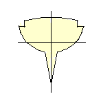
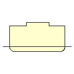
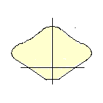

Hull Shapes
Ships and boats have different hulls that make the vessel more efficient at moving through the water and carrying cargo. The shapes also determines how far the vessel sinks into the water, or how stable it is against rolling.
Keeled Yacht
A yacht has a rounded hull to help control the boat in strong winds. The keel is
filled with a heavy ballast, such as concrete, to stop the yacht tipping over
too far.

Keel
Cargo Ships
In the middle of a cargo ship, the hull is as large as possible so that it can contain heavy loads. The hull is more V-shaped towards the bow, and rounder at the stern.

Central hull
Speed Boats
The shape of speed boat’s hull helps keep air between the boat and the water, instead of cutting through it.
As the boat speed up, the hull starts to skim across the water, instead of
cutting through it.

Flat V-shape
Catamaran
A Catamaran has two separate hulls, joined together with strong crossbeams. This shape is very stable because it is so wide.